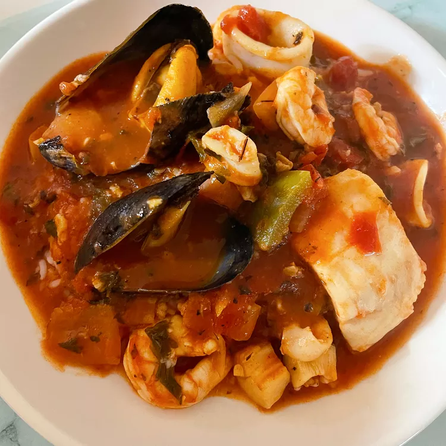

Seafood Cioppino

Seafood Cioppino is a flavorful and hearty fish stew that originated in San Francisco, California, in the late 1800s
It was created by Italian immigrants, particularly from the port city of Genoa, and is a delicious blend of Italian culinary traditions and local seafood availability. The dish is known for its rich tomato-based broth and a variety of fresh seafood.
Ingredients
- ¼ cup olive oil
- 1 onion, chopped
- 1 green bell pepper, chopped
- 1 fresh red chile pepper, seeded and chopped
- 4 cloves garlic, minced
- 1 (28 ounce) can crushed tomatoes
- 1 (8 ounce) can tomato sauce
- ½ cup water
- ½ cup chopped fresh parsley
- 1 (10 ounce) can minced clams, drained with juice reserved
- 2 teaspoons dried basil
- 1 teaspoon dried oregano
- 1 teaspoon dried thyme
- 1 pinch paprika
- 1 pinch cayenne pepper
- salt and ground black pepper to taste
- 1 cup white wine
- 25 mussels, cleaned and debearded
- 25 shrimp
- 1 pound cod fillets, cubed
- 10 ounces scallops
Home